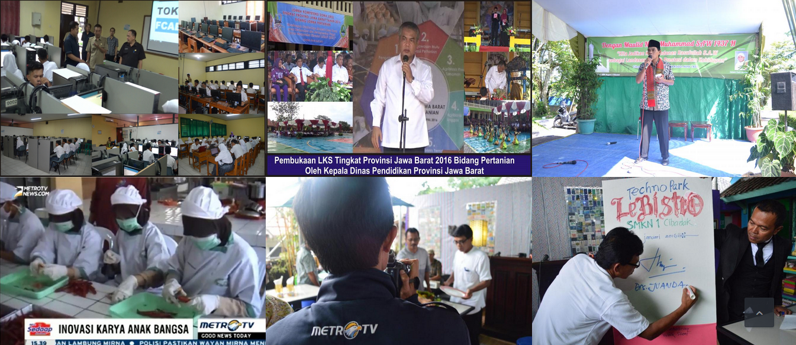

Pengumuman
Selamat kepada team LKS SMKN 1 CIBADAK yang telah meraih Juara I Bidang Fishery dan Juara Har. II Bidang Post Harvest Technology pada LKS Tingkat Nasional di Malang tahun 2016
Latest News
PELEPASAN LULUSAN SMKN 1 CIBADAK TAHUN 2016 BERLANGSUNG HIDMAT DAN BERKESAN, SMKN 1 CIBADAK LULUS 100%
SMKN 1 Cibadak Tahun ini mengeluarkan lulusan sebanyak 526 Orang dari jumlah siswa sebanyak 526 dan dinyatakan lulus 100%. Selain itu SMKN 1 Cibadak mendapatkan predikat menjadi s...
SMKN 1 CIBADAK JUARA UMUM LKS SMK 2016 TINGKAT PROVINSI JAWA BARAT BIDANG PERTANIAN
Pada Kejuaran Bergengsi SMK tingkat Jawa barat tersebut, SMKN 1 Cibadak dinobatkan sebagai Juara Umum dengan menyabet 3 gelar juara dari 5 kompetensi yang dilombakan. SMKN 1 Cibada...
LKS TINGKAT PROVINSI JAWA BARAT 2016 BIDANG PERTANIAN RESMI DIBUKA OLEH KEPALA DINAS PENDIDIKAN PROVINSI JAWA BARAT
Kampus SMKN 1 Cibadak-Sukabumi 20 April 2016 Lomba Kompetensi Siswa (LKS) Tingkat Provinsi Jawa Barat Tahun 2016 Bidang Pertanian dibuka secara resmi oleh Kepala Dinas Penddidikan ...
Gallery
